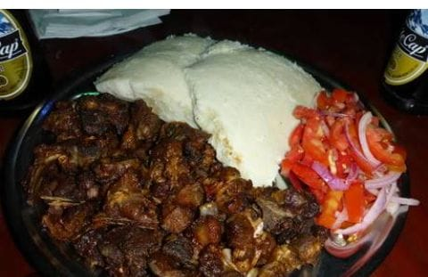

Nyama Choma
Ingredients:
- 1 kg goat or beef, cut into large pieces
- 1 tsp salt
- 1 tsp black pepper
- 2 tbsp cooking oil
- 1 lemon, juiced
- 1 cup water
- 2 cups maize flour (for ugali)
- 4 cups water (for ugali)
Instructions:
- Prepare the meat: Marinate the meat with salt, black pepper, lemon juice, and a bit of oil. Let it sit for 30 minutes.
- Grill the meat: Over medium-hot charcoal or a grill, cook the meat for about 30-40 minutes, turning occasionally until it’s golden brown and well-cooked.
- Make Ugali: Boil 4 cups of water, then slowly add maize flour while stirring. Keep stirring until thick. Let it cook for 5 minutes, then serve.
- Prepare Kachumbari: Mix diced tomatoes, onions, coriander, chili, and vinegar in a bowl. Add salt and mix well.
- Serve: Plate the nyama choma with ugali and kachumbari on the side.